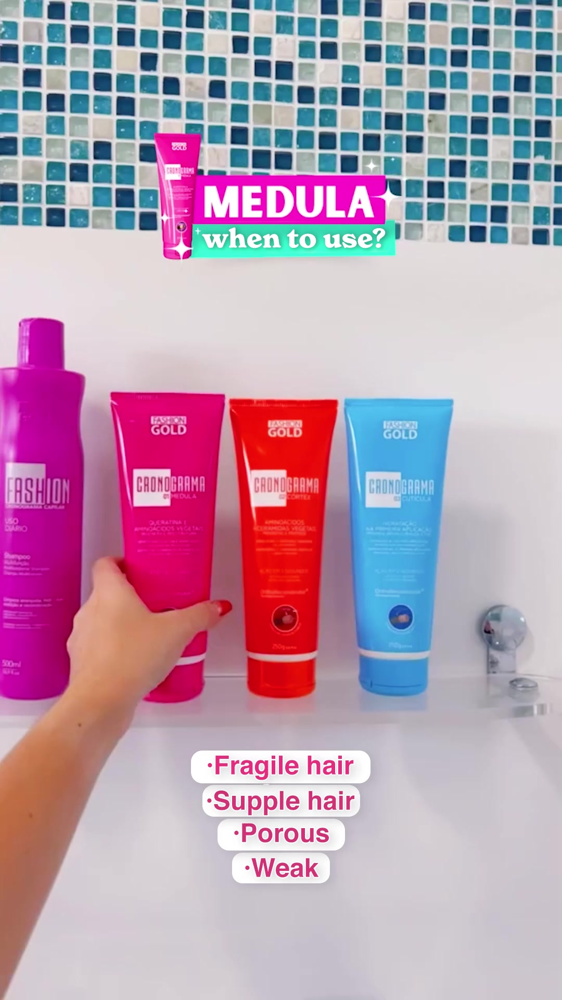
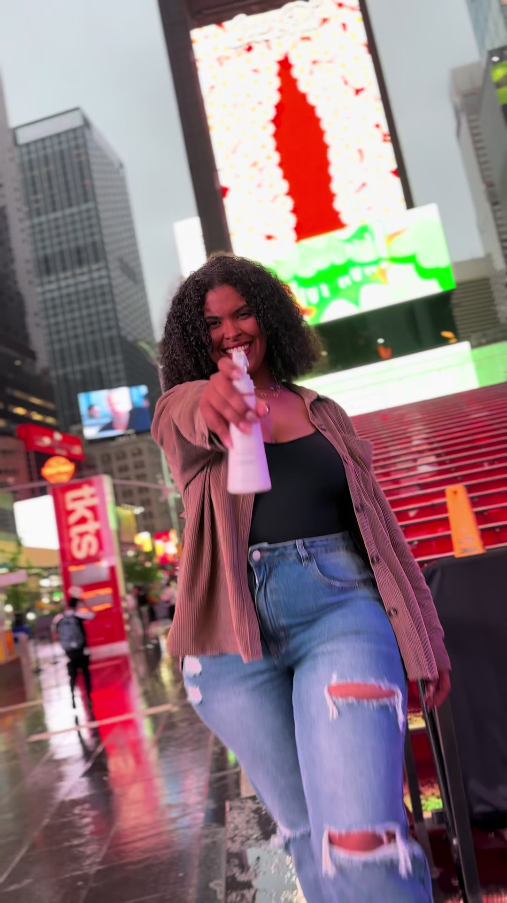

Vertical video carousel
Cartão de vídeo vertical, no formato de stories. Mostra uma imagem e só carrega o vídeo quando a pessoa clica.
- Classe base
.yb-video
Como se parece
Com [data-video] — play

Sem data-video — pôster, com .yb-video__caption

Cronograma, week oneO cartão não é o botão
O cartão é <div> e quem recebe o clique é o
.yb-video__play, que é um Icon
button. Já foi <button class="yb-video"> com o
<video controls> injetado dentro: conteúdo interativo dentro de
botão é HTML inválido, e na prática os controles do vídeo ficavam inalcançáveis —
o botão é uma parada de foco só, e o Tab nunca entra nele.
O play só aparece com data-video. Sem a fonte, o cartão é
pôster e não promete o que não entrega. As onze telas estão assim hoje: nenhuma
declara o atributo, então nenhuma mostra o play.
Sem data-video não existe play
O design system não hospeda mídia. A primeira fileira declara
data-video só para mostrar o play: o caminho não existe, e o clique
não toca nada. Na segunda, sem o atributo, o play some sozinho, por regra da folha. Em produção o atributo
traz a URL do CDN e o botão aparece no mesmo lugar. Um botão que promete vídeo
e não entrega é pior do que não ter botão.
Pôster primeiro, vídeo depois
Quarenta e cinco vídeos em autoplay é o que faz uma home pesar. O
<video> só entra no DOM no clique, com o pôster já pintado —
então não há salto de layout quando ele chega, e quem passa direto não paga
nada.
A legenda é opcional, o rótulo não
.yb-video__caption aparece só onde o pôster não tem texto
próprio queimado — duas camadas de legenda no mesmo canto não se leem. O
aria-label do botão, esse existe em todos: sem ele o leitor de
tela anuncia seis botões idênticos e sem nome.
No celular
Código
Cada variante sem o cromo da galeria, e o CSS, o JS e os tokens desta peça, lidos da folha a cada build.
<div class="yb-video" data-video="../pages/video/tt.mp4">
<img src="../pages/img/tt-1.jpg" alt="Fashion Gold on curly hair, first result" loading="lazy">
<button class="yb-iconbtn yb-iconbtn--onmedia yb-iconbtn--lg yb-video__play" type="button" aria-label="Play: Fashion Gold on curly hair, first result"><svg class="yb-icon" aria-hidden="true"><use href="ybera-icons.svg#yb-play"/></svg></button>
</div><div class="yb-video" data-video="../pages/video/tt.mp4">
<img src="../pages/img/tt-4.jpg" alt="Satin bonnet routine after a keratin treatment" loading="lazy">
<button class="yb-iconbtn yb-iconbtn--onmedia yb-iconbtn--lg yb-video__play" type="button" aria-label="Play: Satin bonnet routine after a keratin treatment"><svg class="yb-icon" aria-hidden="true"><use href="ybera-icons.svg#yb-play"/></svg></button>
</div><div class="yb-video" data-video="../pages/video/tt.mp4">
<img src="../pages/img/tt-5.jpg" alt="Which Cronograma tube for which hair damage" loading="lazy">
<button class="yb-iconbtn yb-iconbtn--onmedia yb-iconbtn--lg yb-video__play" type="button" aria-label="Play: Which Cronograma tube for which hair damage"><svg class="yb-icon" aria-hidden="true"><use href="ybera-icons.svg#yb-play"/></svg></button>
</div>.yb-video{
position:relative; display:block; overflow:hidden;
aspect-ratio:var(--yb-aspect-reel); border-radius:var(--yb-radius-card);
background:var(--yb-bg-inverse); width:100%;
}
.yb-video img, .yb-video video{width:100%; height:100%; object-fit:cover; display:block;}
.yb-video__play{
position:absolute; inset:0; margin:auto;
transition:transform var(--yb-transition-control);
}
.yb-video__play::after{content:""; position:absolute; inset:-100%}
.yb-video__error{
position:absolute; inset-inline:0; inset-block-end:0;
padding:var(--yb-space-2) var(--yb-space-3);
background:var(--yb-danger-surface); color:var(--yb-danger-text);
font-size:var(--yb-type-caption-size); text-align:center;
}
@media (hover:hover){
.yb-video:hover .yb-video__play{transform:scale(1.06);}
}
.yb-video__play .yb-icon{margin-inline-start:3px;}
.yb-video[data-playing="true"] .yb-video__play{display:none;}
.yb-video:not([data-video]) .yb-video__play{display:none;}
.yb-video__caption{
position:absolute; inset-inline:var(--yb-space-3);
inset-block-end:var(--yb-space-3);
color:var(--yb-text-inverse); font-size:var(--yb-type-caption-size);
line-height:var(--yb-line-height-base); text-align:start;
text-shadow:var(--yb-elevation-text-media);
display:-webkit-box; -webkit-box-orient:vertical;
-webkit-line-clamp:2; line-clamp:2; overflow:hidden;
}
@media (prefers-reduced-motion:reduce){
.yb-video__play{transition:none;}
.yb-video:hover .yb-video__play{transform:none;}
}<!-- uma vez por pagina, antes de </body> -->
<script src="ybera-components.js" defer></script>
<!-- conteudo que chega depois (secao carregada por JS do tema): -->
<script>Ybera.init(secao);</script>--yb-aspect-reel: 9 / 16;
--yb-bg-inverse: #1E1E1F;
--yb-danger-surface: #FBEAE9;
--yb-danger-text: #B3261E;
--yb-elevation-text-media: 0 1px 3px rgba(30,30,31,.6);
--yb-line-height-base: 1.35;
--yb-radius-card: 8px;
--yb-space-2: 0.5rem;
--yb-space-3: 0.75rem;
--yb-text-inverse: #FFFFFF;
--yb-transition-control: 120ms cubic-bezier(.2, 0, 0, 1);
--yb-type-caption-size: 0.8125rem;Anatomia e API
- Cartão — Vertical, 9:16. O vídeo só carrega quando a pessoa toca — capa primeiro.
- Capa — O quadro de abertura. É o que se vê antes de qualquer byte de vídeo.
- Play — É o
.yb-iconbtncom a variante sobre mídia, e leva o rótulo do vídeo.
As peças que formam este componente, o que dá para variar nele e os tokens que ele usa. Tudo é lido direto do código, então está sempre atualizado.
.yb-video__caption .yb-video__error .yb-video__play:hoverybera-behavior.js. Sem ele aparece, mas não responde.Tokens 12
Cor 4
--yb-danger-surface#FBEAE9--yb-danger-text#B3261E--yb-bg-inverse#1E1E1F--yb-text-inverse#FFFFFF
--yb-line-height-base1.35--yb-type-caption-size0.8125rem
Espaço 2
--yb-space-20.5rem--yb-space-30.75rem
Forma 2
--yb-aspect-reel9 / 16--yb-radius-card8px
Elevação 1
--yb-elevation-text-media0 1px 3px rgba(30,30,31,.6)
Estado 1
--yb-transition-control120ms cubic-bezier(.2, 0, 0, 1)
Faça / não faça
✓ Faça
Play nomeado pelo assunto, vídeo criado só no clique.
✕ Não faça
“Play” sozinho, num trilho de seis vídeos, dá seis controles idênticos na lista do leitor de tela.
Acessibilidade
- O cartão nasce como pôster com botão de play nomeado —
aria-labelcom o assunto do vídeo, não “play”. - O vídeo só é criado no primeiro clique: nada toca sozinho, nada baixa antes de alguém pedir.
- Conteúdo falado precisa de legenda. Sem faixa de legenda, o vídeo é decoração para quem não ouve.